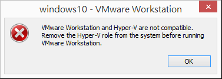
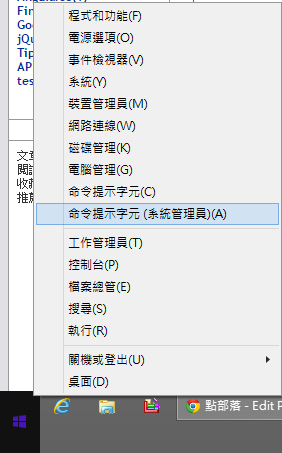
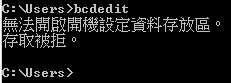
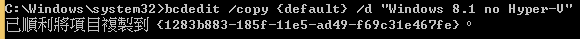
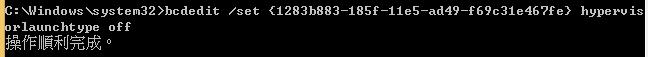
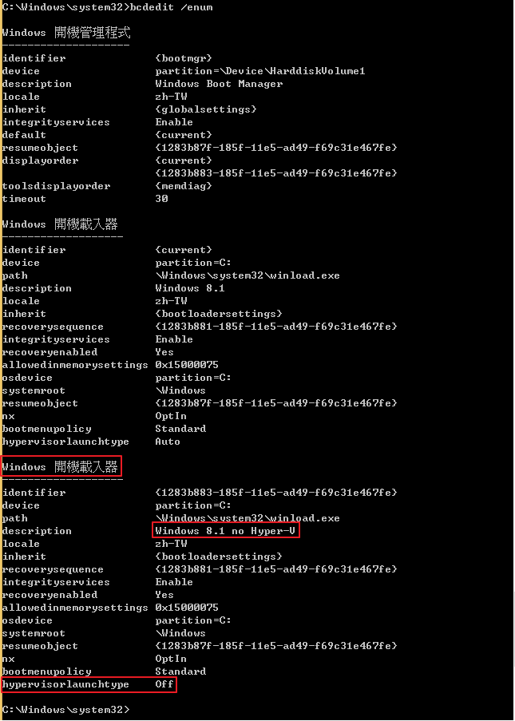
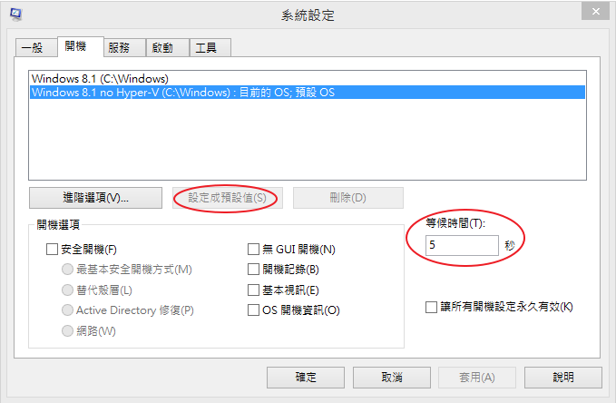
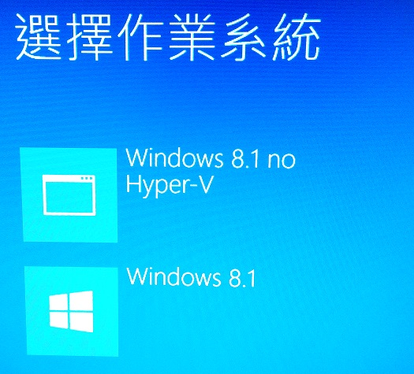

VMware Workstation and Hyper-V are not compatible. Remove the Hyper-V role from the system before running VMware Workstation
如果你的windows有開Hyper-V，此時又想跑VMware做實驗時，
開啟VMWare虛擬機時出現錯誤訊息，
「VMware Workstation and Hyper-V are not compatible. Remove the Hyper-V role from the system before running VMware Workstation.」

意思就是微軟的Hyper-V與VMware不相容，白話一點就是他們兩位老大哥一山不容二虎啦。
那只好再多加一個開機選項讓VMware能夠跑起來囉。
1、使用具有系統管理員權限的命令提示字元
於左下角按右鍵或按【Win】+【X】快捷鍵選擇「命令提示字元(系統管理員)」

注意一定要使用具有系統管理員權限的命令提示字元，否則無法使用bcdedit

2、新增一個開機選項給VMware使用
(1)、新增開機選項
- 指令格式Bcdedit /copy ID /d "New entry description"
請輸入指令bcdedit /copy {default} /d "Windows 8.1 no Hyper-V"，
用來表示複製並新增一個開機選項。

(2)、關閉Hypervisor
- 指令格式bcdedit /set {ID} hypervisorlaunchtype off
然後針對剛剛所新增的開機選項關閉Hypervisor，
請複製上一步驟剛剛所產生的ID，
然後依照指令格式bcdedit /set {ID} hypervisorlaunchtype off，
請輸入指令bcdedit /set {1283b883-185f-11e5-ad49-f69c31e467fe} hypervisorlaunchtype off

3、結果
請輸入指令bcdedit /enum來查看發現剛新增的開機選項的hypervisorlaunchtype的確有被關掉了

也可以執行msconfig去設定預設的開機選項與選擇等候時間

補充：設定預設的開機選項也可直接輸入指令如：
bcdedit /default {1283b883-185f-11e5-ad49-f69c31e467fe}
最後開機畫面如下圖

參考資料：
Boot Configuration Data in Windows Vista
(2012-05-26) Using Both Microsoft Hyper-V And VMware Workstation On The Same Machine